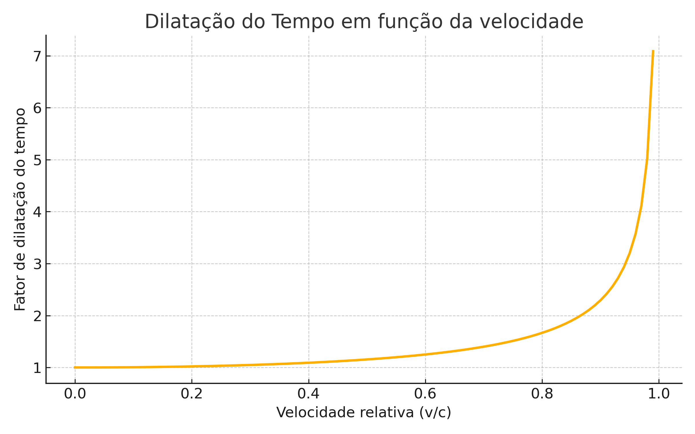
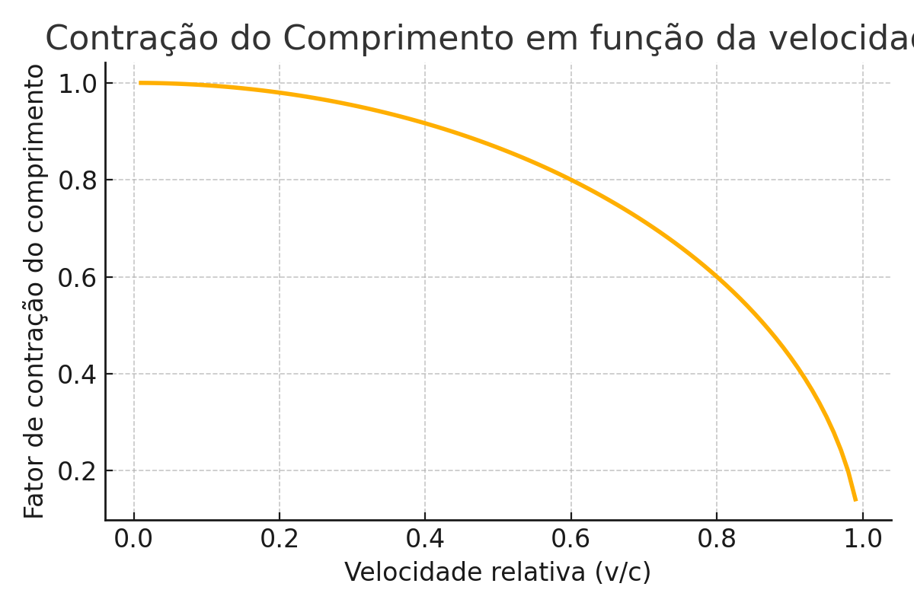

Relatividade Especial: Einstein, o Tempo e a Velocidade da Luz
Relatividade Especial: Einstein, o Tempo e a Velocidade da Luz
🌟 O que foi o ano milagroso de Einstein?
ℹ️ Em 1905, Albert Einstein publicou cinco artigos revolucionários. Entre eles, “Sobre a Eletrodinâmica dos Corpos em Movimento” deu origem à teoria da Relatividade Especial1. A teoria reformulou completamente o que entendemos por tempo, espaço e movimento.
Como assim o tempo não é absoluto? E se dois relógios estiverem se movendo em relação um ao outro, qual marca o “verdadeiro” tempo?
📜 Postulados da Relatividade Especial
✅ A teoria se baseia em dois postulados simples — mas revolucionários:
- As leis da física são as mesmas em todos os referenciais inerciais (sem aceleração).
- A velocidade da luz no vácuo é constante para todos os observadores, independentemente da velocidade da fonte ou do observador.
⏱️ Dilatação do Tempo: O Que É e Como Funciona
Quando um objeto se move muito rápido (próximo à velocidade da luz), o tempo passa mais devagar para ele em relação a um observador parado.

\[ \Delta t = \frac{\Delta t_0}{\sqrt{1 - \frac{v^2}{c^2}}} \]
📏 Contração do Comprimento: O Espaço Também Encolhe?
⚠️ Surpreendentemente, objetos em movimento também parecem encolher no comprimento, para um observador em repouso:
\[ L = L_0 \sqrt{1 - \frac{v^2}{c^2}} \]

🔁 Transformações de Lorentz
Essas transformações descrevem como espaço e tempo se relacionam entre observadores que se movem em velocidades diferentes:
\[ \begin{aligned} x' &= \gamma (x - vt) \\ t' &= \gamma \left(t - \frac{vx}{c^2} \right) \end{aligned} \quad \text{com} \quad \gamma = \frac{1}{\sqrt{1 - v^2/c^2}} \]
👯 O Paradoxo dos Gêmeos
Imagine dois gêmeos: um fica na Terra e o outro viaja numa nave espacial próxima à velocidade da luz. Quando o viajante retorna, ele está mais jovem do que o irmão que ficou. Isso acontece porque o tempo “passou mais devagar” para quem estava em movimento acelerado.
🧪 Relatividade vs Mecânica Clássica
| Conceito | Mecânica Clássica | Relatividade Especial |
|---|---|---|
| Tempo | Absoluto | Relativo |
| Soma de velocidades | A + B | Usa fórmula relativística |
| Velocidade da luz | Varia conforme o observador | É constante para todos |
| Transformações | Galileanas | Lorentzianas |
🔍 Mitos comuns sobre a Relatividade
⚠️ “Einstein disse que tudo é relativo.”
❌ Não. Ele mostrou que existem invariantes, como a velocidade da luz e as leis da física.
⚠️ “Relatividade é só sobre coisas que se movem rápido.”
❌ Errado. Relatividade influencia até mesmo tecnologias do dia a dia, como o GPS!
❓ Perguntas para refletir
🔦 Pergunta 1: Acendendo uma lanterna dentro do trem
Você está viajando em um trem a altíssima velocidade, próxima à da luz. No meio do vagão, você acende uma lanterna. Para você, a luz:
- Viaja mais rápido para frente, já que o trem também se move para frente
- Viaja mais rápido para frente, já que o trem também se move para frente
- Viaja mais rápido para trás, pois a traseira está se aproximando da luz
- Viaja mais rápido para trás, pois a traseira está se aproximando da luz
- Viaja para frente e para trás com a mesma velocidade
✅ Resposta correta: C
📘 Comentário: Para você, que está dentro do trem e considera-se em repouso, a luz se propaga simetricamente. Esse é o princípio da relatividade: as leis da física (incluindo a velocidade da luz) são as mesmas em todos os referenciais inerciais.
Mas para alguém parado na estação, a luz parece alcançar mais rápido a parte traseira do vagão, pois o vagão está “correndo” para frente — o que nos leva à ideia de que a simultaneidade depende do referencial.
⏳ Pergunta 2: O tempo para astronautas e agricultores
Um astronauta está viajando a uma fração significativa da velocidade da luz. Um agricultor permanece na Terra. Ao fim da viagem:
- Ambos estarão com a mesma idade, pois o tempo é universal
- Ambos estarão com a mesma idade, pois o tempo é universal
- O astronauta estará mais velho, pois se moveu mais
- O astronauta estará mais velho, pois se moveu mais
- O astronauta estará biologicamente mais jovem
✅ Resposta correta: C
📘 Comentário: Esse é o famoso paradoxo dos gêmeos. Do ponto de vista do observador na Terra, o tempo para o astronauta passa mais lentamente — o relógio a bordo da nave anda mais devagar.
Esse efeito já foi observado experimentalmente em partículas como múons e até mesmo em relógios atômicos embarcados em aviões e satélites. No caso do GPS, as correções relativísticas são essenciais para que a navegação seja precisa.
📚 Conclusão
A Relatividade Especial nos obriga a repensar o tempo, o espaço e a noção de simultaneidade. O que parece simples à primeira vista revela um mundo onde dois eventos simultâneos para um observador podem não ser para outro.
Einstein começou com dois postulados — e nos levou a uma revolução do pensamento físico.
🔗 Links Úteis
Footnotes
Einstein, A. (1905). “Zur Elektrodynamik bewegter Körper.” Annalen der Physik, 17(10), 891–921.↩︎